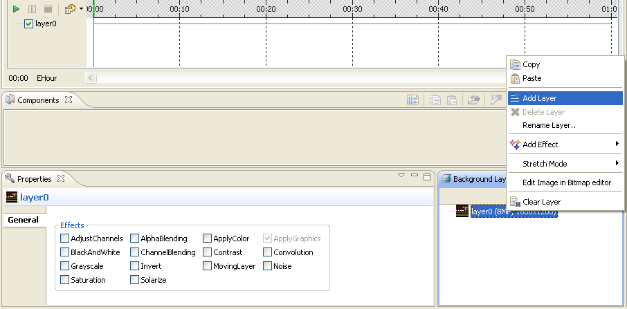
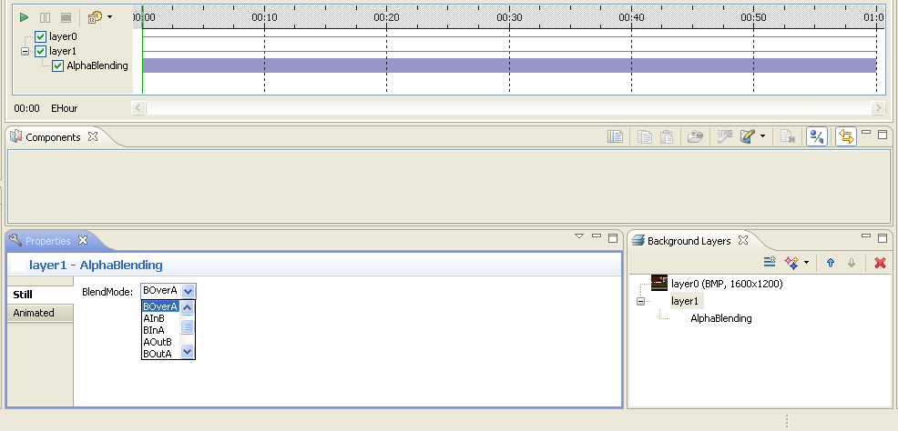

Managing Layers
Carbide.ui allows you to create components with layers. You can create
separate layers for parts of an image, and edit the contents of one
layer without touching other layers. The maximum number of layers is
three. In the Layers view, you can:
- Add layers
- Edit layers
- Merge layers
- Delete layers
Only one layer at a time can be activated. Click on a layer to activate
it. You can also add effects to the layers in the Layers view. you can
paste images on top of layers, but these layers have to be added first.
Note:
You have to select the
component in, for example, the Editor before its layers are shown in
the Layers view.
Adding layers
Note:
You can only add layers
to those components that can be animated.
- In the Editor,
select a
component that can be animated.
Right-click the component and select Edit/Animate.
The Animation Editor
opens.
- In the Layers view,
right-click the component and select Add
Layer.
- A layer is added to the
component.

Figure:
Add Layers
Editing layers
- In the Editor, activate the
component whose layers you want to
edit.
- In the Layers view,
right-click the base layer component and
select the tool you want to edit the layer with:
To edit the layer component in a bitmap editor, select Convert and edit in Bitmap
editor.
In the Conversion
confirmation
window, select the bitmap resolution and Preserve mask if you want to
preserve the mask.
To edit the layer component in a vector editor, select Edit image in Vector editor.
- Edit the layer in the
external editor.
- Save the layer.
- The Layers view displays
the changes in the layer.
- Add effects to the layer, if
needed.
- The Editor displays the
effect.
Note:
You can only edit base
layers in external editors.
Merging layers
When an animated component consists of multiple layers, you can adjust
the degree to which a layer is merged with layers below it.
- In the Editor, right-click
the element whose layers you want to
merge.
- Select Edit/Animate selected
elements.
- The Animation editor opens.
- Right-click the layer and
select Add
Effect -> AlphaBlending.
- In the Layers view,
right-click the AlphaBlending
effect and select Parameters.
- Define a BlendMode
for
the layer.

Figure:
Merge Layers
Alpha blend
Alpha blend defines the logic in which the current layer is merged with
the bottom layer. It is set by default when the current layer has
another layer below it. You can choose from the following blend modes:
Note:
A is the 1st layer and B
is the 2nd layer.
- A over B
- B over A
- A in B
- B in A
- A out B
- B out A
- A top B
- B top A
- AX or B
Deleting layers
Note:
You cannot delete the
base layer. Layers that can be deleted can only be added to animated
components.
- In the Editor, right-click
the animated component from which you
want to delete layers and select Edit/Animate
selected elements.
- The Animation editor opens.
- Right-click the layer you
want to delete and select Delete Layer.
- The layer is deleted.